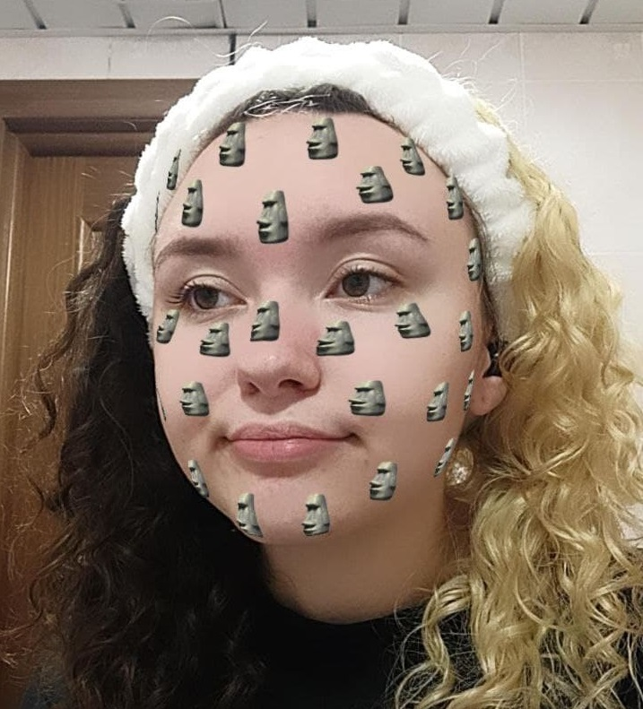

 С детства очень шумная, честная, добрая, вспыльчивая, но не злопамятная. По образованию скорее технарь, в школе нравились больше уроки математики, информатики и английского языка. Так Настя и выбрала УИР.
Ошмяны маленький город, но, если и появлялось что-то творческое, Настя всегда пробовала: танцы, рисование, плетение бисером, вышивание и другие различные занятия в кружке «Умелые ручки». До сих пор старается поддерживать свою творческую часть: вяжет, плетет фенечки, рисую, выкладывает картины алмазами. (Нет, ну что за прелесть?)
Настя увлекается готовкой. Это, скорее, следствие из того, что она очень любит покушать. В дополнение к этому она обожает кулинарное шоу «Мастер шеф». Поверьте наслово, у Насти это отлично получается!
Ещё в детстве Настя хотела покрасить волосы в красный или рыжий. Выросла и смогла. Только сначала блонд, потом синий, потом розовый, опять блонд, затем лавандовый, жёлтый, зелёный, снова блонд, неожиданно в сплит, а теперь в чёрный. И все цвета ей очень идут.
С самого начала, когда я только увидела Настю, она сразу показалась мне интересной и я решила, что по-любому буду с ней в хороших отношениях. Мы не так много общались лично, но тем не менее, могу сказать точно, сейчас мы в ОЧЕНЬ хороших отношениях, ахахах, хотя Настя слишком вредная. Но я все равно ее люблю, потому что она красивая, милая, смешная и еще куча всего, но нельзя ее разбаловать комплиментами!!